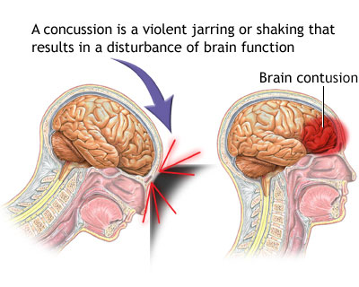

01
Published
Page Hero & Breadcrumb
Headline, subtitle, and breadcrumb hierarchy trail on concussion.html
Frontend Source of Truth · Frontend/conditions/concussion.html
Configure hero headline and subtitle, brain injury lead text, "What is a concussion" explanation, 9 acute symptoms checklist, hyperbaric oxygen therapy, Frequency Specific Microcurrent (FSM), and CTA band.
Headline, subtitle, and breadcrumb hierarchy trail on concussion.html
Top banner image, injury warning lead, practice introduction, and inline CTA

Featured visualMechanism of injury, risk of second impact syndrome, and brain cellular recovery
Checklist of 9 acute signs, timing notes, and inline illustration
Dedicated subsections for Hyperbaric Oxygen and FSM Therapy with appointment triggers
Full-width banner at the bottom of the page prompting concussion evaluation
Browser page title, search description snippet, and indexing directives